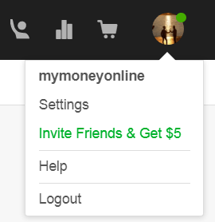

Verwijzingssysteem
Fiverr beheert een systeem van verwijzingen waarmee u uw winst gemakkelijk kunt verhogen, om toegang te krijgen tot het verwijzingssysteem moet u op de afbeelding van uw profiel klikken dat rechts van de pagina verschijnt en selecteer de optie die u in groene kleur ziet
|  |  |
Zodra de verwijzingsmodule is geopend, kunt u uw link op verschillende manieren delen: door het naar uw e-mailcontacten te sturen, naar specifieke ontvangers te sturen of via sociale netwerken te delen. Zodra een van uw vrienden zich registreert en een aankoop op internet maakt, ontvangt u 5 USD.